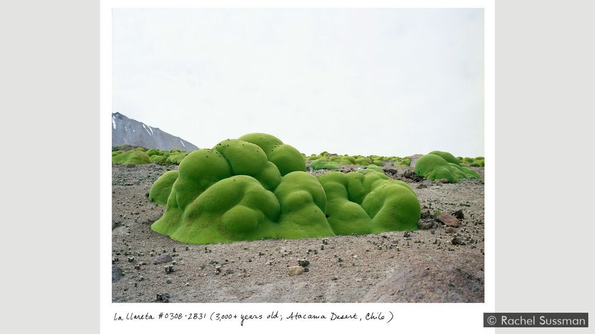
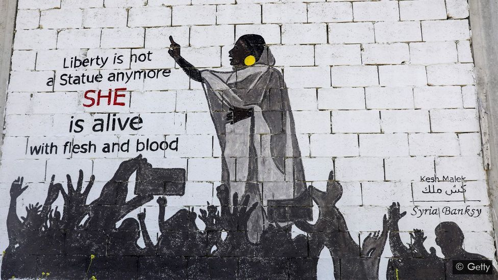

Art and Society
Does society influence art or does art influence society? Actually, society strongly influences art and artists, producing a cultural context with which interact. But it's true also the opposite: art is the mean for the artist to communicate with people and transmit strong messages.

How art and culture can help us rethink time
By Ella Saltmarshe and Beatrice Pembroke

How to create an iconic image
By Sophia Smith Galer